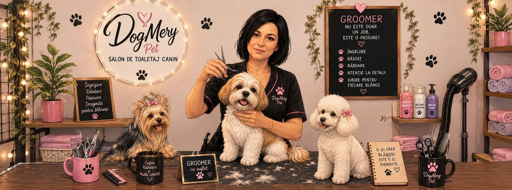
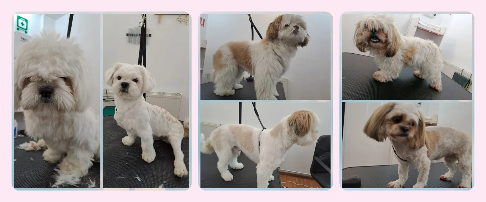
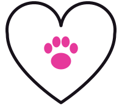

Pachet complet
de la 140 lei
Tuns, spalat, uscat, periat, curatat urechi, taiat unghii, parfumat.
- Talie mica140 lei
- Talie medie170 lei
- Talie mare200 lei
Toaletaj canin - Pitesti
Tuns, spalat, uscat, periat, curatat urechi si taiat unghii, cu rabdare si grija pentru fiecare blanos.
Program: Luni-Vineri 9:00-17:00, Sambata 9:00-14:00

La fiecare sedinta, in functie de pachetul ales, ai parte de aceste ingrijiri.
Tuns adaptat tipului de blana si cerintelor tale.
Baie cu grija, ca blana sa ramana curata si placuta la atingere.
Uscat atent, inainte de periat si aranjat.
Periat pentru o blana aranjata si fara noduri.
Urechile sunt curatate la fiecare sedinta.
Unghii taiate la fiecare sedinta, ca mersul sa fie confortabil.
Cateva dintre blanosii care au trecut pe la noi.

Preturile sunt in lei si depind de talia cainelui.
de la 140 lei
Tuns, spalat, uscat, periat, curatat urechi, taiat unghii, parfumat.
de la 100 lei
Spalat, uscat, periat, parfumat, curatat urechi, taiat unghii. Fara tuns.
de la 100 lei
Tuns, periat, parfumat, curatat urechi, taiat unghii. Fara baie.
Pentru cainii cu blana foarte incalcita sau cu paraziti, pretul poate suferi mici modificari. Vezi toate detaliile si regulile salonului.
Pe 0791 140 396 sau pe WhatsApp. Ne spui rasa si talia cainelui.
Alegem impreuna intervalul care ti se potriveste.
Daca ai lasat cainele la salon, te sunam cand poti sa-l iei.

In decembrie 2025, salonul a organizat o campanie de donatii de mancare si textile pentru cainii din Adapostul de caini Smeura, in parteneriat cu PetPro.ro si totulpentrucani.ro.
4,9 din 5 pe Google, din 38 de recenzii (octombrie 2026). Citeste toate recenziile pe Google Maps.
„Nu numai ca ne-a primit, insa a stat peste program”M. U., recenzie Google
„Este minunat sa intalnesti oameni care isi fac meseria cu atat de multa pasiune si implicare si respect pentru animalute! Recomand din toata inima!”L. U., recenzie Google
Intre 1 h 30 min si 3 h, in functie de rasa, tipul si starea blanii si de comportamentul cainelui.
Pachetul complet costa 140, 170 sau 200 lei, in functie de talia cainelui. Doar spalat sau doar tuns costa 100, 130 sau 150 lei. La blana foarte incalcita, subpar abundent sau temperament dificil, pretul final se stabileste dupa evaluarea cainelui.
Ne suni la 0791 140 396 sau ne scrii pe WhatsApp, iar impreuna alegem ziua si ora.
Intarzierile de peste 15 minute pot duce la anularea programarii. Daca stii ca intarzii, anunta-ne cat mai repede.
Suna sau scrie-ne pe WhatsApp si stabilim ziua si ora potrivita.